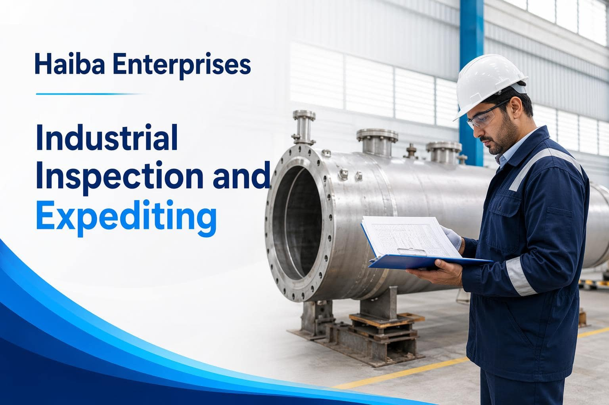

01
Plan
Set inspection points, supplier requirements, documentation needs, and reporting expectations.
Inspection and Expediting
Support procurement and project delivery with ASME and third-party inspection, worldwide expediting, technical audits, and supplier pre-qualification.

Capabilities
01
Set inspection points, supplier requirements, documentation needs, and reporting expectations.
02
Review technical, quality, manufacturing, and delivery information against the agreed scope.
03
Provide practical findings and status visibility to support timely project decisions.
Tell us about the equipment, supplier network, or delivery milestone that needs attention.
Talk to HaibaQuality and supply assurance
Inspection and expediting support helps owners, buyers, and project teams understand whether equipment and materials are progressing against the agreed technical and commercial requirements.
Haiba can support inspection planning, supplier communication, document follow-up, and reporting across the supply cycle. The objective is clear visibility so issues can be addressed while corrective action is still practical.
01 | Plan
We clarify specifications, hold points, documentation, responsibilities, and reporting expectations.
02 | Monitor
We follow manufacturing progress, inspection actions, documents, and delivery risks.
03 | Report
We present clear findings and action status so project teams can make timely decisions.
Quality and supply assurance
Inspection and expediting support helps owners, buyers, and project teams understand whether equipment and materials are progressing against agreed technical and commercial requirements.
Haiba supports inspection planning, supplier communication, document follow-up, and reporting across the supply cycle so issues can be addressed while corrective action is still practical.
01 | Plan
Clarify specifications, hold points, responsibilities, and reporting expectations.
02 | Monitor
Follow manufacturing progress, inspection actions, documents, and delivery risks.
03 | Report
Present clear findings and action status for timely project decisions.